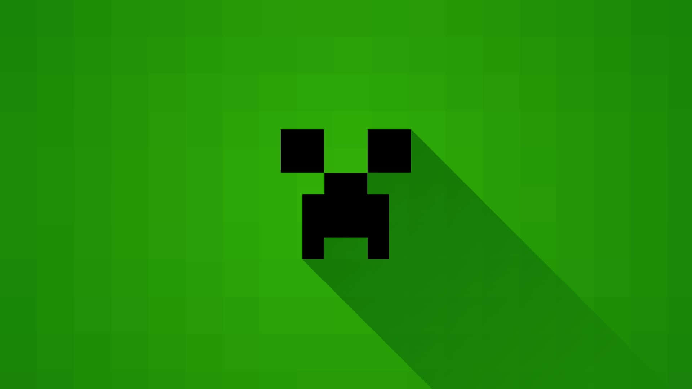

Guía de Minecraft
Minecraft es uno de los juegos mas jugados de la historia,
este aparecio en 2011 con la versión 1.0.0.
En esta epoca Minecraft no era tan conocido como ahora pero luego de un tiempo se dio a conocer como el juego de cubos y fue comprado por Microsoft
Minecraft es un videojuego con varias modalidades, puedes crear un mundo "Survival" en el cual dedes sobrevivir a distintos peligros y tomar riesgos para mejorar tus herramientas, armadura y construccioes. O bien puedes crea un mundo "Creativo", en el cual tu puedes liberar toda tu creatividad y realizar construcciones increribles, herramientas poderosas o lo que sea que tu mente quiera con recursos ilimitados.
Minecraft oroginalmente se llamaba "CaveGame", fue creado por el suiso Markus Persson, junto a su amigo Jens Peder Bergensten, o mas conocido como Jeb. Mas adelante Notch (Markus Persson) vendió Minecraft por 2 billones de dolares a Microsoft.


Cosas basicas
- Busca un arbol y rompelo
- Abre el inventario y crea una mesa de crafteo y ponla en el piso
- Interactua con la mesa y haz 8 palos
- Crea un pico de madera
- Busca piedra y consigue al menos 20 bloques de piedra
- Crea un pico de piedra
- Crea un hacha de piedra
- Crea una espada de piedra
- Consigue algo de comida cazando animales o recogiendo cultivos
- Busca carbón y consigue al menos 8 unidades
- Crea algunas antorchas
- Busca un lugar seguro donde pasar la primera noche
- Haz un horno y colócalo en el suelo
- Cocina la comida que hayas conseguido
- Consigue lana de 3 ovejas
- Crea una cama y colócala en un lugar seguro
- Duerme en la cama para pasar la noche
- Consigue más madera y piedra para tener recursos de sobra
- Busca hierro y consigue al menos 10 minerales de hierro
- Funde el hierro en el horno
- Crea un cubo de hierro
- Crea un escudo
- Mejora tus herramientas de piedra por herramientas de hierro
- Explora los alrededores y busca una aldea
- Marca la ubicación de tu casa para no perderte
- Guarda los objetos importantes en un cofre
- Empieza a construir una casa sencilla